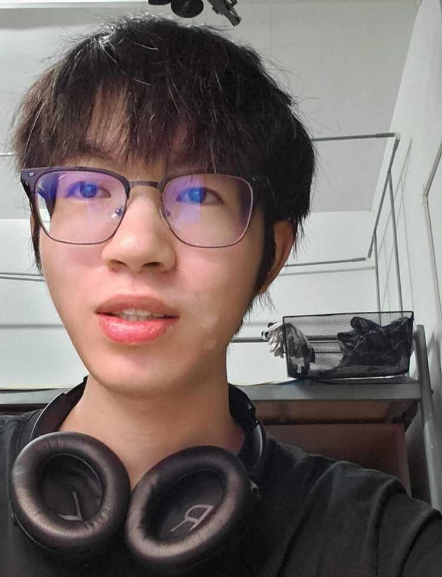
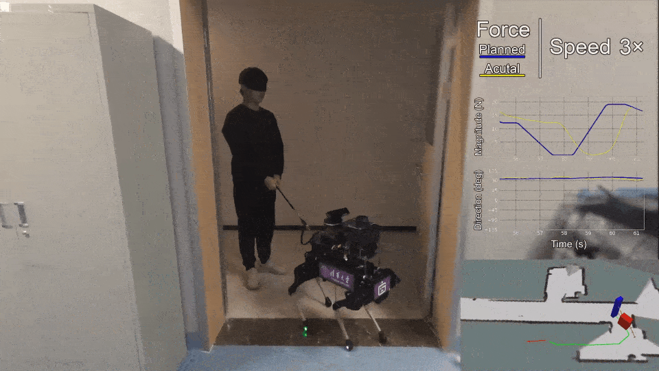
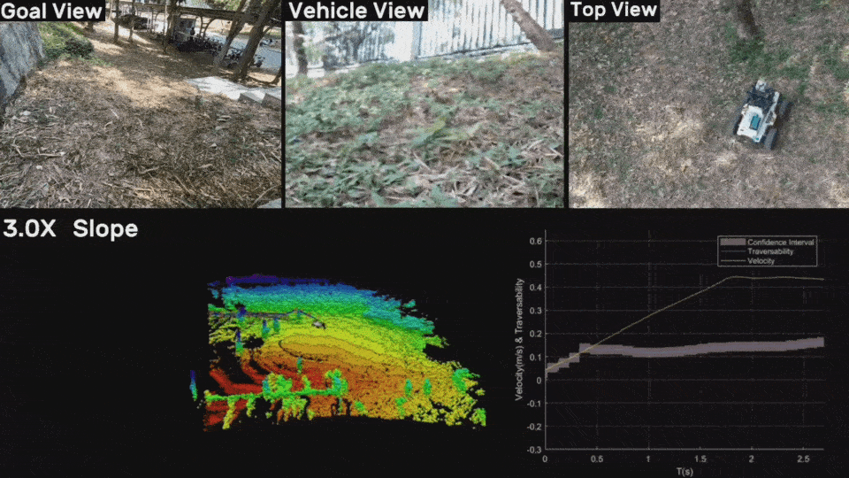
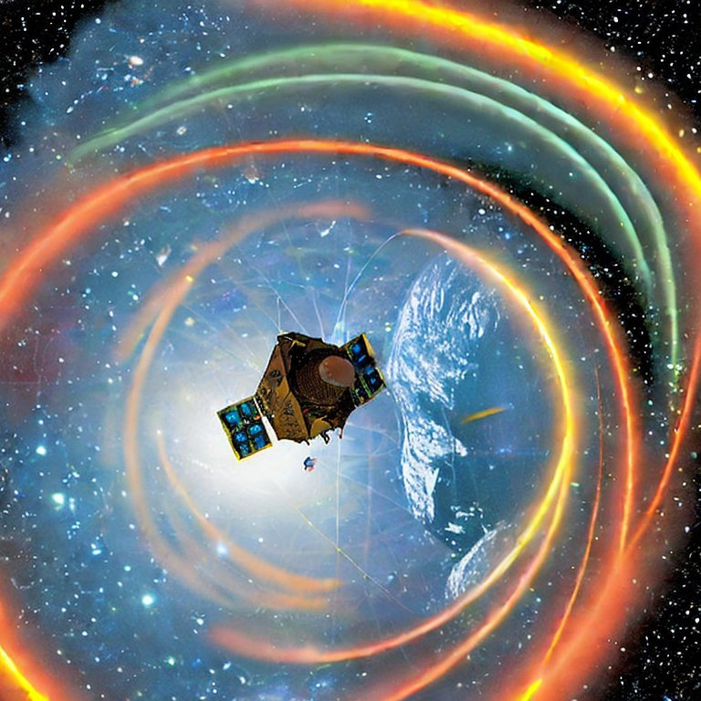
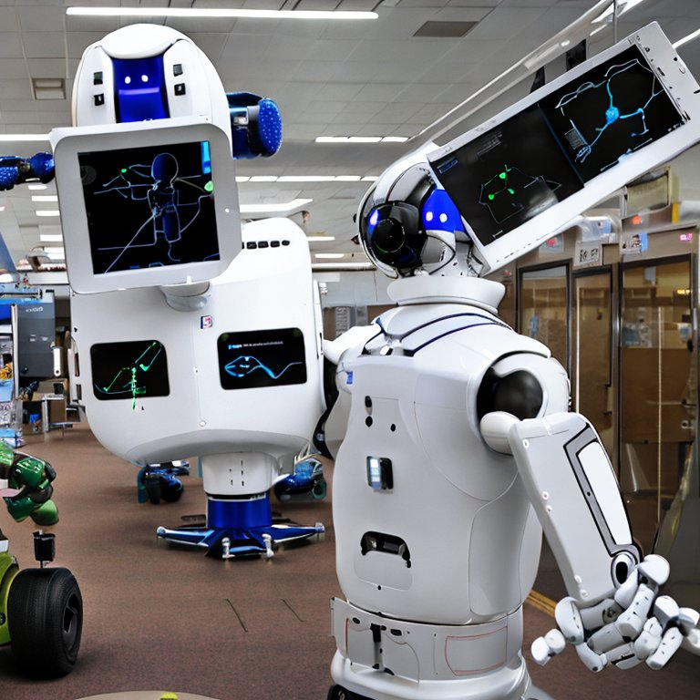
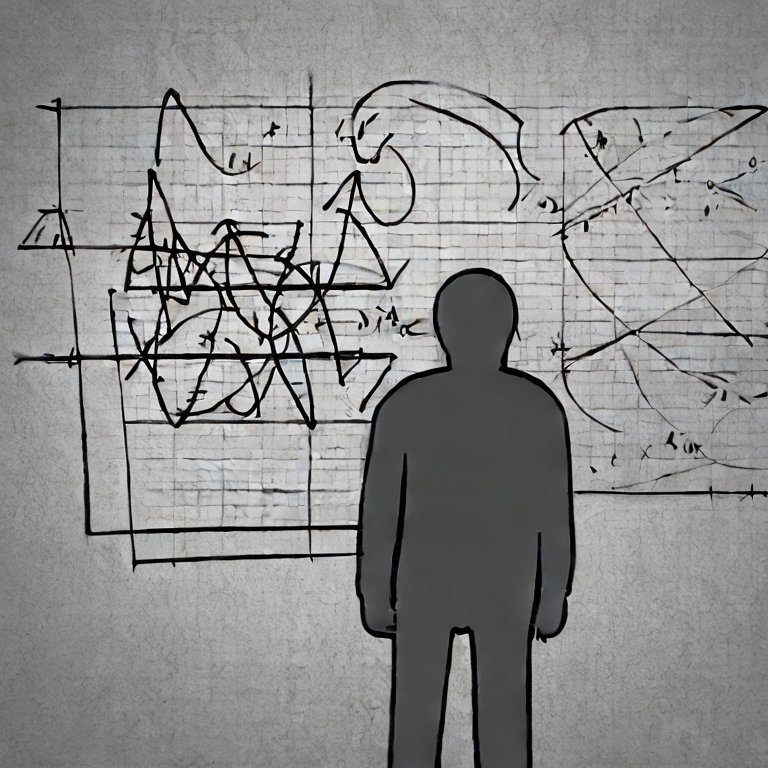

|  |
I am a junior undergraduate student majoring in Artificial Intelligence at Sichuan University (SCU). I have been very fortunate to work with Prof. Colin TAN in 2022 through the NUS SOC summer workshop. I started my internship in April 2022 with Asst. Prof. Lu Chen in the language model group of the XLANCE lab at Shanghai Jiao Tong University. I love playing basketball 🏀 and table tennis 🏓 in my free time. I am also open to collaborating with people to explore the possibilities of language models in various fields. |
|
My research interests are: 1️⃣Parameter-efficient fine-tuning (PEFT) of large-scale pre-trained language models (PLMs). 2️⃣Knowledge enhanced PLMs, e.g. syntactic knowledge. 3️⃣Model compression for PLMs and Multi-modal Pre-training of Large Models. |
|


|
Yanbo Chen, Zhengzhe Xu, Zhuozhu Jian, Gengpan Tang, Yunong Yangli, Anxing Xiao*, Xueqian Wang*, Bin Liang Accepted by ICRA, 2023 arXiv / Video |
|

|
Zhuozhu Jian, Zihong Lu, Xiao Zhou, Bin Lan, Anxing Xiao*, Xueqian Wang*, Bin Liang IROS, 2022 arXiv / Video |
Control: |
Berkeley EE291E: Hybrid System and Intelligent Control (Prof. S. Shankar Sastry) Berkeley ME232: Advanced Control Systems (Prof. Kameshwar Poolla) Berkeley EE220C: State Estimation and Optimal Control (Prof. Mark Mueller) Berkeley EE128: Feedback Control System (Prof. Ronald Fearing) |
Robotics: |
Berkeley EECS106B: Robotic Manipulation and Interaction (Prof. Ruzena Bajcsy, Prof. S. Shankar Sastry) Berkeley ME102B: Mechatronics Design (Prof. Hannah Stuart) HIT AUTO2004: Design and Practice of Robotic System |
AI & ML: |
NUS CS6216: Graph Machine Learning (Prof. Xavier Bresson) NUS CS5340: Probabilistic Graphical Models (Prof. Harold Soh) Berkeley CS294: Geometry and Learning for 3D Vision (Prof. Yi Ma) HIT AUTO2012: Introduction to Machine Learning |
Theoretical: |
Berkeley E231: Mathematical Methods in Eng. (Prof. Andrew Packard, Prof. Murat Arcak, Prof. Mark Mueller) HIT MATH1009: Advanced Linear Algebra I, II (张贤科) HIT MATH1010: Mathematical Analysis I, II, III (严质彬)) HIT EMEC1002: Theoretical Mechanics |
Journal Reviewer:IEEE Robotics and Automation Letters (RA-L), 2022 IEEE Transactions on Robotics (T-RO), 2021 Biomimetic Intelligence and Robotics (BIROB), 2021Conference Reviewer:IEEE/RSJ International Conference on Intelligent Robots and Systems (IROS), 2022 IEEE International Conference on Robotics and Automation (ICRA), 2022, 2023 IEEE International Conference on Robotics and Biomimetics (ROBIO), 2021Undergraduate Research Mentor:Quadruped Guidance Robot, Tsinghua University, 2021.9 – 2022.3 Plane-Fitting based Uneven Terrain Navigation Framework, Tsinghua University, 2021.9 – 2022.3 |
Erdös number:My Erdos number is 4 Anxing Xiao -> Koushil Sreenath -> S. Shankar Sastry -> Béla Bollobás -> Paul ErdősMemberships:IEEE, IEEE Robotics and Automation SocietyCo-authors:Koushil Sreenath, Mechanical Engineering, UC Berkeley. Jun Zeng, Mechanical Engineering, UC Berkeley/Cruise LLC.Zhongyu Li, Mechanical Engineering, UC Berkeley. Ayush Agrawal, Mechanical Engineering, UC Berkeley. Scott Gilroy, Mechanical Engineering, UC Berkeley/Boston Dynamics. Lizhi Yang, Mechanical Engineering, Caltech. Wenzhe Tong, Electrical and Computer Engineering, UMich. Hao Luan, Electrical and Computer Engineering, UofT. Max Q.-H. Meng, Electronic Engineering, CUHK/SUSTech. Yunhui Liu, Mechanical and Automation Engineering, CUHK. Jiankun Wang, Electronic and Electrical Engineering, SUSTech. Shiwu Zhang, Precision Machinery and Precision Instrumentation, USTC. Haoyao Chen, Control Science and Engineering, HIT. Xueqian Wang, Control Science and Engineering, Tsinghua University. Zhuozhu Jian, Control Science and Engineering, Tsinghua University. |
|
Modified version of template from here Last updated: 19 Feb 2023 |